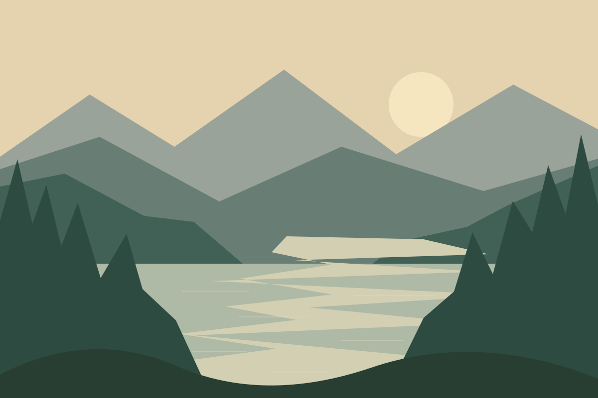

АВГУСТ 2025 · КАРЕЛИЯ
Лето, которое
остаётся с нами
Тёплые вечера у озера, дорога через лес и дни, когда мы никуда не спешили. Маленькая глава нашей большой истории.

01 / 24Вечер на берегу. Вся семья вместе.16 августа
МАЛЕНЬКИЕ МОМЕНТЫ
Самое важное — быть рядом
Сохраняем не только фотографии, но и то, что за ними: любимые места, смешные истории и голоса близких.
Читать историю →